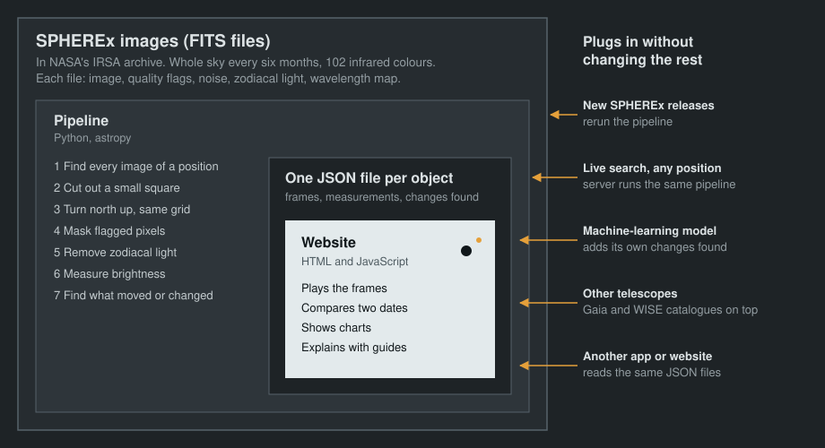

Pick an object on the left or type a position above.
Loading
Changes found 0
moving
shifted position
brightness change
single-frame spot
Selected change
Target brightness over time
Target spectrum
Each frame is taken at its own wavelength, so all frames together give a spectrum.
This frame
How it works
In 1930 Clyde Tombaugh found Pluto by flipping between two photographs of the same patch of sky and noticing one dot that had moved. This tool does the same with images from NASA's SPHEREx telescope, which has photographed the whole sky in infrared every six months since 2025.
What happens when you type a position
The tool asks NASA's IRSA archive for every SPHEREx image that contains the position and downloads a small square around it.
SPHEREx photographs the sky at a different angle each time, so each square is rotated to put north up and redrawn on the same grid. Stars stay put; anything that moves, moves on screen.
Pixels hit by cosmic rays, dead pixels and saturated pixels are marked using the flags that come with each image. The glow from dust in the Solar System (zodiacal light) is subtracted.
A program compares the frames and marks sources that move in a straight line, stars whose position drifts by at least 2.5″ a year, and stars whose brightness changes compared with their neighbours. It gives each one a score. The score is a hint, not a verdict.
How the parts fit together
The data comes first. Everything is built around SPHEREx's own image files (FITS), and the website is only the outer layer that shows the result. New data releases, a better detection model or a different website can each be swapped in without touching the rest.

Limits
One SPHEREx pixel covers 6.15″ of sky. In a year of data only the fastest nearby stars move by about one pixel. Very bright stars saturate the detector, and very faint objects are lost in the noise of a single image.
SPHEREx has six detector arrays, each covering a different infrared wavelength range. A star can look brighter in one array than another simply because of its colour, so to look for brightness changes, compare frames from the same array.
About
Made for the 2026 NASA Space Apps Challenge, challenge “Planet X and SPHEREx”, by team The K' Oirat from Astana, Kazakhstan.
Images: SPHEREx Quick Release spectral images from the NASA/IPAC Infrared Science Archive (IRSA). If you use images from this tool, cite the SPHEREx data release DOIs listed by IRSA. Star catalogues: ESA Gaia DR3 and NASA AllWISE through CDS VizieR. Sky atlas: Aladin Lite by CDS, Strasbourg.
To link to a position, add ?ra=…&dec=… to the address, or use Share.
The change scores come from a simple algorithm and are not scientific classifications.
Share this view
Sky atlas around the target
2MASS images with Gaia DR3 and AllWISE catalogues, from Aladin Lite (CDS).
See the sky move
NASA's SPHEREx telescope photographs the entire sky in infrared every six months. Between two photographs some things shift a little: asteroids, nearby stars, cold brown dwarfs. Some stars change brightness.
There are more than a billion objects in these images, far too many for scientists to check alone. This site lines the photographs up and plays them like a flip-book, so anyone can see what changed.